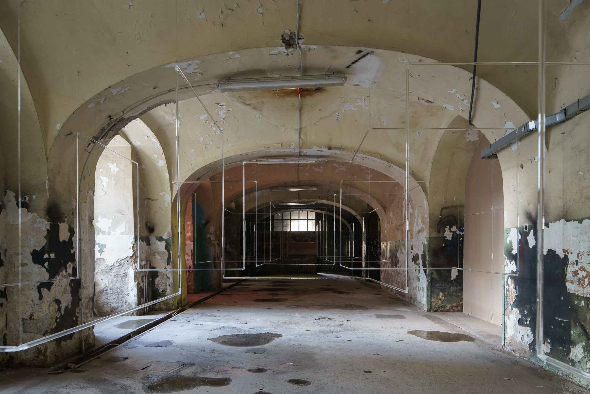
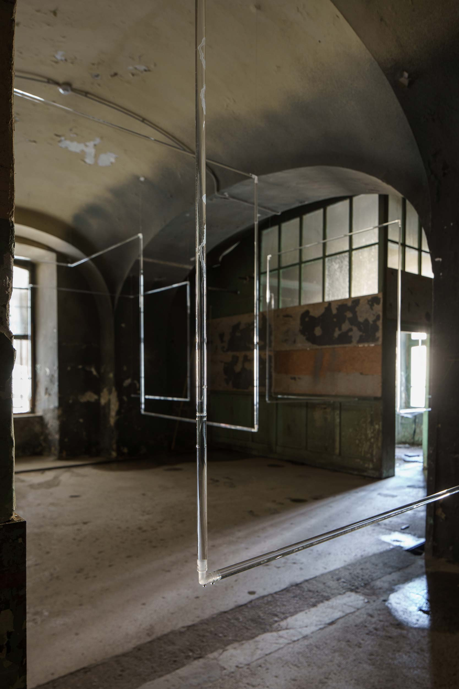
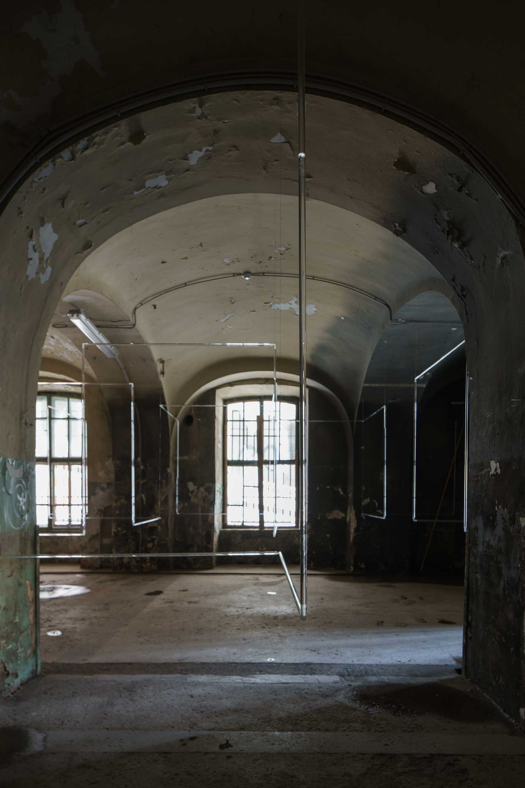
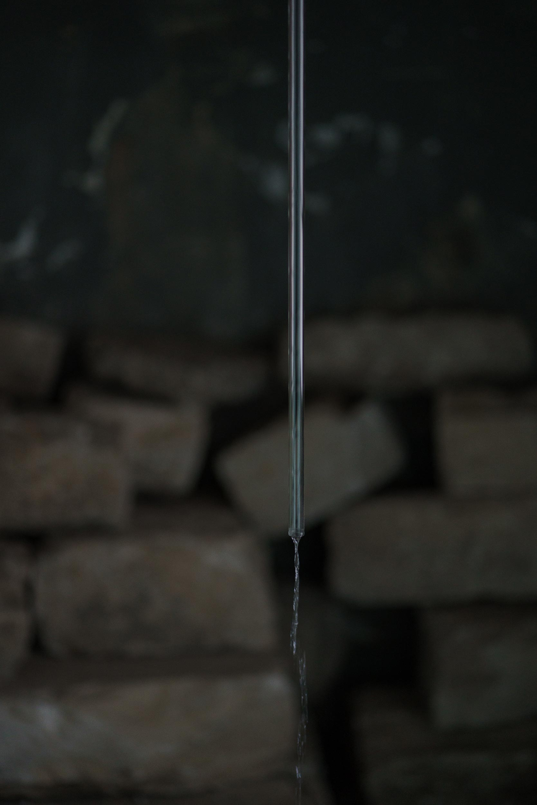
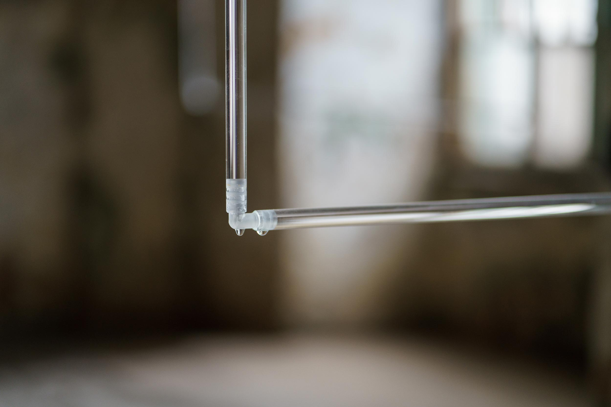
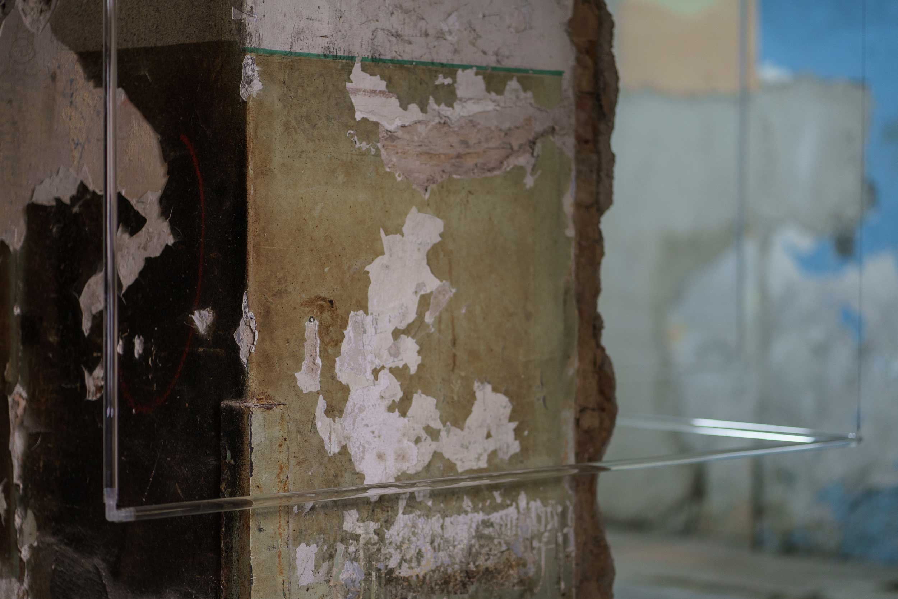
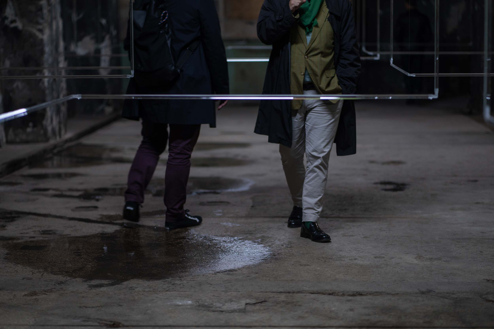
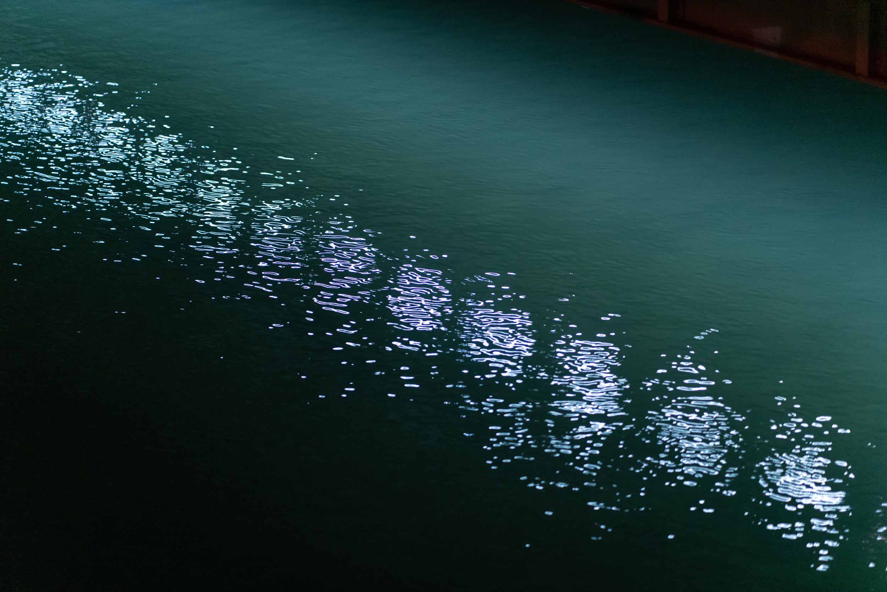
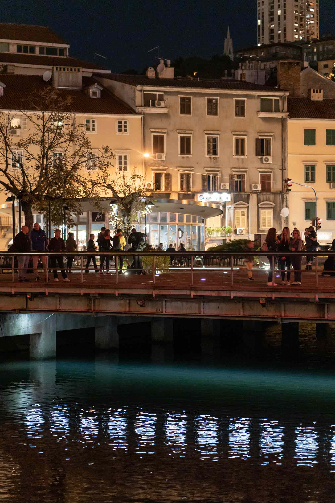

MMSU - Museum of Modern and Contemporary Art
Rijeka
2019
Based on their earlier exhibitions in Zagreb, Museum of Modern and Contemporary Art in Rijeka invited Grönlund and Nisunen to collaborate with Croatian artist Ivana Franke to Rijeka as part of Rijeka 2020 European Capital of Culture. The result of this collaboration was two large scale installations. Both works remain installed at their sites until end of 2020.
Imminence
Glass tubes, plastic elbow connectors, steel wire, screws and plugs, running water, sound system
Imminence is a site-specific installation made especially for unused storage space of MMSU. Water coming from
a tab flows very slowly through a 249 meters long glass tube hanging from the ceiling which wriggles its way
through several rooms and ends up to the floor in last room. The long glass tube is made of 166 pcs of 1,5 m
long parts joined by plastic elbow connectors into a three-dimensional structure in x,y,z grid. The shiny
fragile material and geometrical form of the work contradict with the decayed interior of the space.
One starting point of the work is the underground canal passing by the exhibition space, and sometimes
flooding inside it. Another, more conceptual starting point is our growing awareness of the fact, that due to
climate change getting fresh drinking water from tab is getting a rarity, which is available only in certain
areas. Besides this dystopian progress, the title simply refers to the inevitability in which a visitor
entering the space seeing the work instinctively knows what is about to happen in the other end.







The installation Imminence was conceived by: Ivana Franke, Tommi Grönlund and Petteri Nisunen, in 2019
Imminence makes part of the Interventions in Public Space carried out by the Museum of Modern and
Contemporary Art and Sweet&Salt flagship (Rijeka 2020 - European Capital of Culture program)
3D modeling: Alexandre Mballa-Ekobena
Technical support: Miroslav Šarić
Coordinator: Morana Matković
Curator: Sabina Salamon
Video and photos: Damir Zizić
Time Slip
Led panels, steel beams, wire, screws and plugs, control unit
Time Slip is a site-specific intervention made for Titov Trg, named after a communist revolutionary and
statesman Josip Broz Tito, in the very center of Rijeka. The square has a rich history and is today popular
meeting place for people in general and especially for local youth.
Technically speaking the square is a bridge structure with Rjecina river flowing underneath it. The
installation consists of linear led lights hanged underneath the square which great a line of light reaching
from shore to shore. The linear led lights are controlled with a control unit enabling a strobe function. The
composition running the light is made at site and the frequency of the flashing is adjusted according to flow
of water underneath and phase of city life around the work.
The conceptual idea of the work is to emphasize the important spot in the city, and momentarily freeze the
flow of river and thus the flow of time. The work deals with time, history and memory in slightly melancholic
way, reminding which kind of layers certain place conveys in the minds of people.


Time Slip is part of the Interventions in Public Space carried out by the Musuem of Modern and Contemporary
Art and Sweet&Salt flagship (Rijeka 2020 - European Capital of Culture program)
The intervention was conceived by: Ivana Franke, Tommi Grönlund and Petteri Nisunen, in 2019
Light manufacturer: Eart, Zagreb
Progammer: Israel Lopez
Technical support: Ivan Lušičić
Technical set-up: Miroslav Šarić
Coordinator: Morana Matković
Curator: Sabina Salamon
Photos: Damir Zizić